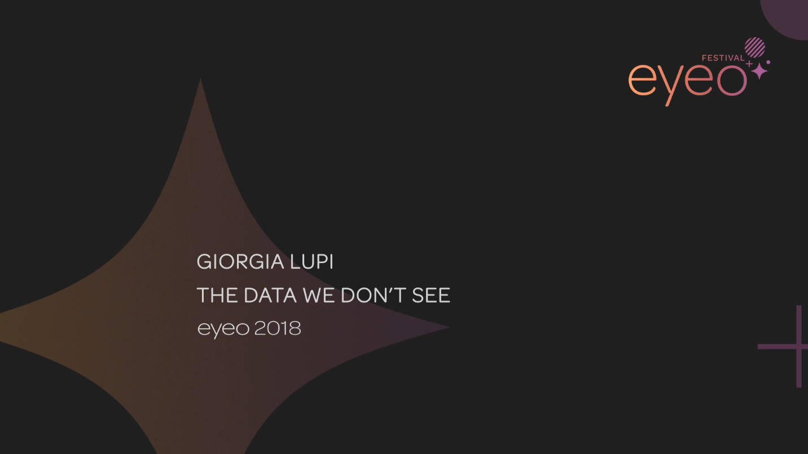
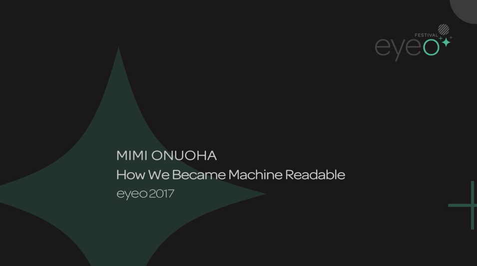
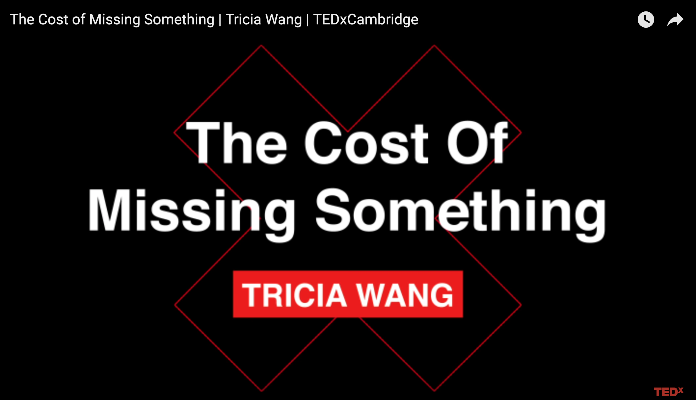

Preliminary Grounding and Ethical Considerations¶
This section will cover various documents detailing ethical grounding principles for data/visualization projects. These resources can serve as models for addressing the ethical grounding and critical questions of how we deal with and understand data both generally and in our visualizations.
Oaths and Manifestos¶
“A Hippocratic Oath” by Robert Kosara: In 2011, Robert Kosara (whose site Eager Eyes is generally well known in the vis world) wrote a blog post entitled “Data Visualization is Growing Up” that included a suggestion, originally made by Jason Moore of the Air Force Research Lab, for a data visualization hippocratic oath. The below quote shows a version of Moore’s oath tweaked by Kosara. While we now have many manifestos and best practices lists for dealing with data, many of which are more detailed and grounded in feminism than this version, Kosara and Moore’s idea of a hippocratic oath is thought-provoking nevertheless. While the tone of militarization may be unpalatable, perhaps it may still serve us especially as a warning sign that data visualizations can be used to intentionally deceive, that they can and do harm others (often through negligence), and as a reminder of the “power” they have over the public in that viewers often inherently believe them to be truthful.
“I shall not use visualization to intentionally hide or confuse the truth which it is intended to portray. I will respect the great power visualization has in garnering wisdom and misleading the uninformed. I accept this responsibility willfully and without reservation, and promise to defend this oath against all enemies, both domestic and foreign.”
“Feminist Data Manifest-NO” by Cifor, M., Garcia, P., Cowan, T.L., Rault, J., Sutherland, T., Chan, A., Rode, J., Hoffmann, A.L., Salehi, N., Nakamura, L.: Written in 2019 by leading scholars in the field, the “Manifest-No,” freely available online, is a written manifesto that targets essential data feminist ethical considerations. It is described by the researchers as “a declaration of refusal and commitment…[that]refuses harmful data regimes and commits to new data futures.” A very short representative sampling of the “Manifest-No” is quoted below. However, the full version is strongly recommended, worthy of a read (and many re-reads!):
“1. We refuse to operate under the assumption that risk and harm associated with data practices can be bounded to mean the same thing for everyone, everywhere, at every time. We commit to acknowledging how historical and systemic patterns of violence and exploitation produce differential vulnerabilities for communities.”
“2. We refuse to be disciplined by data, devices, and practices that seek to shape and normalize racialized, gendered, and differently-abled bodies in ways that make us available to be tracked, monitored, and surveilled. We commit to taking back control over the ways we behave, live, and engage with data and its technologies.”
“8. We refuse work about minoritized people. We commit to mobilizing data so that we are working with and for minoritized people in ways that are consensual, reciprocal, and that understand data as always co-constituted.”
“Design Justice Network Principles” by The Design Justice Network: As visualization is reliant on design practices, this “living document” created by The Design Justice Network offers important principles for grounding design work. A short representative sampling is quoted below. However,reading the full version is strongly recommended and, this guide is a living document, it is recommended that you refer to their site for the most up-to-date information:
“Principle 2: We center the voices of those who are directly impacted by the outcomes of the design process.”
“Principle 3: We prioritize design’s impact on the community over the intentions of the designer.”
“Principle 5: We see the role of the designer as a facilitator rather than an expert.”
“Data Feminism Principles” by Catherine D’Ignazaio and Lauren F. Klein: D’Ignazio and Klein’s principles of data feminism offer important guidelines for thinking about how we do data science and work with data as a whole, challenging understandings of classification, hierarchies, and power therein. And, like with the “Manifest-No” and “Design Justice” lists above, a short representative sampling is quoted below. However,reading the full 7 principles (or even the full “Introduction” or book!) is all strongly recommended:
“4. Rethink binaries and hierarchies. Data feminism requires us to challenge the gender binary, along with other systems of counting and classification that perpetuate oppression.”
“6. Consider context. Data feminism asserts that data are not neutral or objective. They are the products of unequal social relations, and this context is essential for conducting accurate, ethical analysis.”
Videos Engaging Key Concepts¶

“The Data We Don’t See” by Giorgia Lupi: This is a recording of data artist Giorgia Lupi’s 2018 eyeo talk. In it she discusses how she deals with building a data narrative, the importance of hand-drawn data visualization, small data practices, and developing nuanced datasets. She also speaks to her idea of “data humanism”: her framework for working with humans as data. It should be noted that this video is approximately 47 minutes long. It is highly recommended, but if you just want a taste of Lupi’s approach, you might check out her article “Data Humanism, the Revolution will be Visualized” as a shorter intro, as well as the other Lupi material in the Additional Resources section.

“How We Became Machine Readable” by Mimi Onuoha: This is a recording of Mimi Onuoha’s 2017 eyeo talk. It speaks to the messiness of data collection and categorization, and to what is often left out in that process.

“The Cost of Missing Something” by Tricia Wang: This is a recording of Tricia Wang’s TEDXCambridge talk. It speaks to what big data misses, and offers her idea of incorporating “thick” data into our work.
Read Further¶
The “Manifest-No Playlist” compiled by T.L. Cowan with Marika Cifor and Jessica Lapp includes a long list of feminist manifestos to inspire your work.
The Design Justice Network principles are also included in the Introduction to Sasha Costanza-Chock’s book Design Justice: Community-Led Practices to Build the Worlds We Need, which is also freely available online, and a great way to dig further into design justice.
The entirety of Catherine D’Ignazio and Lauren F. Klein’s book Data Feminism is freely available online, and is data ethics cannon.